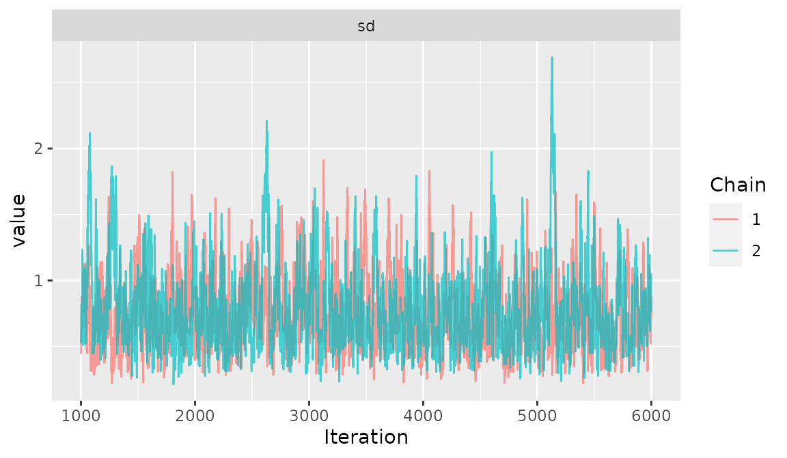

Bayesian FE & RE NMA using piecewise exponential model
Sandro Gsteiger
2022-07-26
example-nma-groupedTTE-PWE.Rmd“Minimal” example that might serve as template
Introduction
This vignette provides a short example of a Bayesian piecewise exponential (PWE) NMA for grouped survival data. The model fit calls jags via the R2jags package. Pre- and post-processing is done with gemtcPlus.
Load input data
The PWE NMA for grouped survival data requires columns “study”, “treatment”, “t.start” and “t.end” (identifying the time interval), “n.event”, “n.censored”, and “n.risk” (identifying the observed events, numbers of censorings, and patients at risk for the given interval).
The gemtcPlus package contains such an example data set.
Load in the data
data("grouped_TTE")Ready the data
# Returns list list contaiing a jags list ready for input to `nma_fit` and a network object
model_input <- nma_pre_proc(grouped_TTE, model_plan)Fit the model
model <- nma_fit(model_input = model_input)## module glm loaded## Compiling model graph
## Resolving undeclared variables
## Allocating nodes
## Graph information:
## Observed stochastic nodes: 675
## Unobserved stochastic nodes: 36
## Total graph size: 5085
##
## Initializing modelJAGS summary. Check convergence by inspecting Rhat (should be at least <1.05), and see whether the effective sample size is large enough to allow for inference (rule of thumb: n.eff >1000, though this may be demanding).
model## Inference for Bugs model at "/tmp/RtmpiQa6Pm/temp_libpath844d447c83dc/gemtcPlus/BUGScode/gsd_piece-wise-cst_fe.txt", fit using jags,
## 2 chains, each with 6000 iterations (first 1000 discarded)
## n.sims = 10000 iterations saved
## mu.vect sd.vect 2.5% 25% 50% 75% 97.5% Rhat
## d[1,1] 0.000 0.000 0.000 0.000 0.000 0.000 0.000 1.000
## d[2,1] -0.241 0.298 -0.831 -0.441 -0.241 -0.042 0.348 1.001
## d[3,1] -0.401 0.333 -1.066 -0.623 -0.399 -0.181 0.254 1.001
## d[4,1] 0.956 0.372 0.255 0.708 0.943 1.182 1.765 1.013
## d[5,1] 0.616 0.435 -0.213 0.328 0.601 0.899 1.520 1.010
## d[6,1] -0.616 0.713 -2.035 -1.081 -0.616 -0.150 0.799 1.003
## d[1,2] 0.000 0.000 0.000 0.000 0.000 0.000 0.000 1.000
## d[2,2] -0.257 0.142 -0.538 -0.352 -0.259 -0.162 0.025 1.001
## d[3,2] 0.174 0.198 -0.202 0.037 0.175 0.307 0.564 1.004
## d[4,2] 0.171 0.190 -0.201 0.043 0.169 0.300 0.545 1.001
## d[5,2] -0.099 0.220 -0.534 -0.249 -0.099 0.051 0.336 1.003
## d[6,2] 0.963 0.366 0.258 0.715 0.961 1.211 1.689 1.002
## d[1,3] 0.000 0.000 0.000 0.000 0.000 0.000 0.000 1.000
## d[2,3] 0.003 0.092 -0.176 -0.059 0.002 0.065 0.185 1.002
## d[3,3] 0.033 0.151 -0.266 -0.067 0.033 0.132 0.337 1.005
## d[4,3] 0.088 0.134 -0.178 -0.001 0.089 0.179 0.346 1.001
## d[5,3] 0.050 0.155 -0.255 -0.054 0.051 0.155 0.347 1.001
## d[6,3] -0.050 0.230 -0.500 -0.203 -0.048 0.105 0.394 1.004
## mu[1,1] -3.678 0.252 -4.202 -3.843 -3.667 -3.504 -3.216 1.001
## mu[2,1] -3.611 0.169 -3.948 -3.724 -3.607 -3.496 -3.288 1.002
## mu[3,1] -3.856 0.196 -4.254 -3.987 -3.851 -3.722 -3.485 1.001
## mu[4,1] -4.669 0.315 -5.362 -4.863 -4.650 -4.452 -4.102 1.012
## mu[5,1] -4.568 0.420 -5.471 -4.831 -4.538 -4.276 -3.824 1.002
## mu[6,1] -4.684 0.240 -5.167 -4.839 -4.676 -4.516 -4.238 1.001
## mu[7,1] -3.641 0.243 -4.136 -3.801 -3.637 -3.470 -3.185 1.001
## mu[1,2] -3.720 0.173 -4.066 -3.838 -3.713 -3.599 -3.394 1.001
## mu[2,2] -3.042 0.092 -3.229 -3.103 -3.041 -2.979 -2.865 1.002
## mu[3,2] -3.275 0.103 -3.478 -3.344 -3.275 -3.206 -3.072 1.002
## mu[4,2] -3.682 0.134 -3.956 -3.770 -3.677 -3.591 -3.431 1.001
## mu[5,2] -4.331 0.252 -4.853 -4.494 -4.322 -4.157 -3.863 1.001
## mu[6,2] -3.783 0.110 -4.003 -3.857 -3.782 -3.709 -3.573 1.001
## mu[7,2] -3.698 0.173 -4.039 -3.812 -3.698 -3.579 -3.367 1.003
## mu[1,3] -3.783 0.129 -4.044 -3.868 -3.781 -3.694 -3.538 1.003
## mu[2,3] -3.382 0.067 -3.515 -3.427 -3.381 -3.336 -3.254 1.001
## mu[3,3] -3.498 0.072 -3.642 -3.545 -3.497 -3.450 -3.359 1.001
## mu[4,3] -3.622 0.093 -3.812 -3.682 -3.621 -3.559 -3.444 1.001
## mu[5,3] -3.779 0.119 -4.018 -3.860 -3.778 -3.697 -3.548 1.002
## mu[6,3] -3.715 0.065 -3.844 -3.758 -3.714 -3.671 -3.588 1.001
## mu[7,3] -3.597 0.131 -3.858 -3.684 -3.596 -3.508 -3.344 1.002
## deviance 2629.317 8.504 2614.625 2623.282 2628.734 2634.664 2647.734 1.002
## n.eff
## d[1,1] 1
## d[2,1] 6700
## d[3,1] 5400
## d[4,1] 220
## d[5,1] 290
## d[6,1] 700
## d[1,2] 1
## d[2,2] 5400
## d[3,2] 570
## d[4,2] 2700
## d[5,2] 920
## d[6,2] 1800
## d[1,3] 1
## d[2,3] 1500
## d[3,3] 380
## d[4,3] 9500
## d[5,3] 5000
## d[6,3] 500
## mu[1,1] 10000
## mu[2,1] 2400
## mu[3,1] 10000
## mu[4,1] 250
## mu[5,1] 1700
## mu[6,1] 4800
## mu[7,1] 3800
## mu[1,2] 7300
## mu[2,2] 2000
## mu[3,2] 1500
## mu[4,2] 10000
## mu[5,2] 10000
## mu[6,2] 10000
## mu[7,2] 820
## mu[1,3] 660
## mu[2,3] 10000
## mu[3,3] 7300
## mu[4,3] 10000
## mu[5,3] 2500
## mu[6,3] 10000
## mu[7,3] 2000
## deviance 950
##
## For each parameter, n.eff is a crude measure of effective sample size,
## and Rhat is the potential scale reduction factor (at convergence, Rhat=1).
##
## DIC info (using the rule, pD = Dbar-Dhat)
## pD = 36.0 and DIC = 2665.3
## DIC is an estimate of expected predictive error (lower deviance is better).Post processing
Produce diagnostic plots to further assess convergence. Here: select the contrasts trt 2 vs trt 1 for visibility.
# Prepare plot data
nodes <- colnames(as.mcmc(model)[[1]])
sel <- grep("d[2,", nodes, fixed = TRUE)
plot_data <- ggs(as.mcmc(model)[, sel])Figure Traceplot
ggs_traceplot(plot_data)Figure Densityplot
ggs_density(plot_data)
Figure Auto-correlation plot
ggs_autocorrelation(plot_data)Figure Running means
ggs_running(plot_data)Save the FE results for later use.
fixed_effect_model <- model
rm(model)Plan the model
model_plan <- plan_pwe(model.pars = list(cut.pts = c(3, 10)),
bth.model = "RE", ref.std = "STUDY2", nma.ref.trt = "B",
n.chains = 2,
n.iter = 6000,
n.burnin = 1000,
n.thin = 1,
bth.prior = bth_prior(type = "var", distr = "ln", param = list(mean = 1, prec = 1.5)))
# Returns list list contaiing a jags list ready for input to `nma_fit` and a network object
model_input <- nma_pre_proc(grouped_TTE, model_plan)Fit the model
model <- nma_fit(model_input = model_input)## Compiling model graph
## Resolving undeclared variables
## Allocating nodes
## Graph information:
## Observed stochastic nodes: 675
## Unobserved stochastic nodes: 58
## Total graph size: 5788
##
## Initializing modelJAGS summary. Inspect Rhat and n.eff.
model## Inference for Bugs model at "/tmp/RtmpiQa6Pm/temp_libpath844d447c83dc/gemtcPlus/BUGScode/gsd_piece-wise-cst_re-var-ln.txt", fit using jags,
## 2 chains, each with 6000 iterations (first 1000 discarded)
## n.sims = 10000 iterations saved
## mu.vect sd.vect 2.5% 25% 50% 75% 97.5% Rhat
## d[1,1] 0.000 0.000 0.000 0.000 0.000 0.000 0.000 1.000
## d[2,1] -0.273 0.734 -1.747 -0.709 -0.261 0.166 1.181 1.001
## d[3,1] -0.426 0.754 -1.940 -0.886 -0.410 0.029 1.047 1.002
## d[4,1] 0.927 0.900 -0.903 0.384 0.929 1.464 2.707 1.002
## d[5,1] 0.591 1.103 -1.675 -0.048 0.596 1.244 2.783 1.001
## d[6,1] -0.635 1.280 -3.213 -1.429 -0.635 0.163 1.863 1.001
## d[1,2] 0.000 0.000 0.000 0.000 0.000 0.000 0.000 1.000
## d[2,2] -0.261 0.686 -1.652 -0.653 -0.259 0.138 1.123 1.002
## d[3,2] 0.162 0.698 -1.260 -0.241 0.165 0.569 1.585 1.001
## d[4,2] 0.178 0.834 -1.517 -0.306 0.163 0.656 1.869 1.004
## d[5,2] -0.095 1.027 -2.134 -0.694 -0.114 0.487 2.035 1.003
## d[6,2] 0.959 1.127 -1.383 0.303 0.963 1.629 3.199 1.001
## d[1,3] 0.000 0.000 0.000 0.000 0.000 0.000 0.000 1.000
## d[2,3] -0.001 0.679 -1.389 -0.392 0.004 0.395 1.346 1.002
## d[3,3] 0.030 0.688 -1.347 -0.362 0.027 0.433 1.428 1.002
## d[4,3] 0.096 0.831 -1.574 -0.375 0.085 0.576 1.808 1.001
## d[5,3] 0.058 1.011 -2.013 -0.520 0.057 0.623 2.115 1.002
## d[6,3] -0.054 1.094 -2.249 -0.676 -0.058 0.573 2.147 1.002
## mu[1,1] -3.609 0.257 -4.139 -3.774 -3.600 -3.433 -3.134 1.002
## mu[2,1] -3.610 0.183 -3.989 -3.726 -3.603 -3.483 -3.267 1.001
## mu[3,1] -3.869 0.219 -4.325 -4.014 -3.861 -3.715 -3.461 1.002
## mu[4,1] -4.653 0.307 -5.295 -4.856 -4.637 -4.437 -4.092 1.005
## mu[5,1] -4.574 0.417 -5.479 -4.833 -4.548 -4.282 -3.842 1.002
## mu[6,1] -4.617 0.245 -5.122 -4.774 -4.612 -4.451 -4.158 1.001
## mu[7,1] -3.721 0.273 -4.290 -3.901 -3.711 -3.530 -3.225 1.002
## mu[1,2] -3.718 0.198 -4.121 -3.848 -3.713 -3.582 -3.350 1.002
## mu[2,2] -3.045 0.104 -3.255 -3.115 -3.043 -2.973 -2.848 1.003
## mu[3,2] -3.272 0.115 -3.504 -3.348 -3.269 -3.192 -3.055 1.001
## mu[4,2] -3.680 0.130 -3.945 -3.765 -3.678 -3.588 -3.434 1.001
## mu[5,2] -4.342 0.257 -4.878 -4.507 -4.332 -4.165 -3.863 1.003
## mu[6,2] -3.777 0.113 -4.004 -3.852 -3.775 -3.699 -3.564 1.001
## mu[7,2] -3.704 0.199 -4.120 -3.830 -3.698 -3.569 -3.332 1.001
## mu[1,3] -3.776 0.147 -4.071 -3.873 -3.771 -3.673 -3.502 1.002
## mu[2,3] -3.382 0.076 -3.535 -3.434 -3.380 -3.331 -3.234 1.002
## mu[3,3] -3.495 0.085 -3.666 -3.551 -3.492 -3.435 -3.331 1.004
## mu[4,3] -3.626 0.092 -3.812 -3.688 -3.624 -3.562 -3.452 1.003
## mu[5,3] -3.779 0.115 -4.013 -3.856 -3.776 -3.700 -3.560 1.001
## mu[6,3] -3.716 0.064 -3.843 -3.760 -3.716 -3.673 -3.590 1.001
## mu[7,3] -3.603 0.152 -3.912 -3.704 -3.601 -3.500 -3.313 1.002
## sd 0.759 0.301 0.340 0.542 0.703 0.915 1.495 1.003
## deviance 2633.656 9.005 2617.935 2627.314 2632.974 2639.345 2652.835 1.001
## n.eff
## d[1,1] 1
## d[2,1] 10000
## d[3,1] 10000
## d[4,1] 1700
## d[5,1] 10000
## d[6,1] 3800
## d[1,2] 1
## d[2,2] 10000
## d[3,2] 10000
## d[4,2] 2400
## d[5,2] 4800
## d[6,2] 5900
## d[1,3] 1
## d[2,3] 2100
## d[3,3] 1500
## d[4,3] 9600
## d[5,3] 10000
## d[6,3] 2000
## mu[1,1] 1800
## mu[2,1] 10000
## mu[3,1] 1200
## mu[4,1] 340
## mu[5,1] 1100
## mu[6,1] 4100
## mu[7,1] 1000
## mu[1,2] 2300
## mu[2,2] 630
## mu[3,2] 2700
## mu[4,2] 10000
## mu[5,2] 840
## mu[6,2] 10000
## mu[7,2] 10000
## mu[1,3] 2000
## mu[2,3] 1400
## mu[3,3] 520
## mu[4,3] 810
## mu[5,3] 10000
## mu[6,3] 4400
## mu[7,3] 1500
## sd 700
## deviance 10000
##
## For each parameter, n.eff is a crude measure of effective sample size,
## and Rhat is the potential scale reduction factor (at convergence, Rhat=1).
##
## DIC info (using the rule, pD = Dbar-Dhat)
## pD = 41.2 and DIC = 2675.0
## DIC is an estimate of expected predictive error (lower deviance is better).Post processing
Produce diagnostic plots to further assess convergence. Here, let’s select the random effects standard deviation. Figure Traceplot
ggs_traceplot(ggs(as.mcmc(model), family = "sd"))
Figure Densityplot
ggs_density(ggs(as.mcmc(model), family = "sd"))Save the FE results for later use.
random_effects_model <- model
rm(model)Produce outputs of interest
Start with an object collecting all fits done.
all_res <- list(fixed_effect_model, random_effects_model)Model comparison
dcompare <- get_pwe_comparison(all_res)
knitr::kable(dcompare, caption = "__Table__ Model comparison")| Model | CutPoints | DIC | pD | meanDev |
|---|---|---|---|---|
| PWE | 3, 10 | 2665.3 | 36 | 2629.3 |
| PWE | 3, 10 | 2675 | 41.2 | 2633.7 |
Hazard ratio estimates
# loop through fits
for(i in seq_along(all_res)){
res_i <- all_res[[i]]
title <- res_i$descr
cat("### ", title, " \n")
## Tables: Hazard ratio estimates for each segment
HR_rev<- get_pwe_contrasts(fit = res_i,
ref = "A",
digits = 3,
exponentiate = TRUE,
reverse = TRUE)
print(knitr::kable(HR_rev %>% select(-x, -xend), caption = "__Table__ Hazard ratio estimates of A vs other treatments"))
cat("\n\n")
## Graphs (needs the HR data calculated above)
ymax <- 10
dhr <- HR_rev
drib <- data.frame(x = as.vector(t(dhr[c("x", "xend")])), # data structure for ribbons
ylo = rep(dhr$lCrI, each = 2), # cap ribbon at ymax
yup = rep(dhr$uCrI, each = 2),
Comparison = rep(dhr$Comparison, each = 2)) %>%
mutate(yup = ifelse(yup > ymax, ymax, yup))
fig <- ggplot(data = dhr) +
geom_ribbon(data = drib, aes(x = x, ymin = ylo, ymax = yup), fill = "lightblue", alpha = 0.8) +
geom_hline(aes(yintercept = 1), col = "darkgrey") +
geom_segment(aes(x = x, xend = xend, y = Median, yend = Median)) +
facet_wrap(~Comparison, ncol = 2) +
scale_y_log10(breaks = c(0.1, 0.5, 1, 2, 10)) +
coord_cartesian(ylim = c(0.1, ymax)) +
xlab("Month") + ylab("Hazard ratio") +
theme_bw()
cat("__Figure__ Hazard ratio estimates A vs other treatments\n")
plot(fig)
cat("\n\n")
rm(res_i)
}Piecewise Exponential model
| Comparison | Segment | Median | lCrI | uCrI |
|---|---|---|---|---|
| A vs B | [0,3) | 0.786 | 0.436 | 1.416 |
| A vs B | [3,10) | 0.772 | 0.584 | 1.026 |
| A vs B | [10,Inf) | 1.002 | 0.839 | 1.204 |
| A vs C | [0,3) | 1.175 | 0.630 | 2.174 |
| A vs C | [3,10) | 0.650 | 0.441 | 0.957 |
| A vs C | [10,Inf) | 0.971 | 0.717 | 1.313 |
| A vs D | [0,3) | 0.303 | 0.117 | 0.757 |
| A vs D | [3,10) | 0.653 | 0.406 | 1.031 |
| A vs D | [10,Inf) | 0.918 | 0.666 | 1.267 |
| A vs E | [0,3) | 0.428 | 0.150 | 1.198 |
| A vs E | [3,10) | 0.855 | 0.514 | 1.421 |
| A vs E | [10,Inf) | 0.953 | 0.673 | 1.362 |
| A vs F | [0,3) | 1.445 | 0.368 | 5.822 |
| A vs F | [3,10) | 0.296 | 0.144 | 0.596 |
| A vs F | [10,Inf) | 1.052 | 0.672 | 1.660 |
Figure Hazard ratio estimates A vs other treatments
Piecewise Exponential model
| Comparison | Segment | Median | lCrI | uCrI |
|---|---|---|---|---|
| A vs B | [0,3) | 0.771 | 0.174 | 3.257 |
| A vs B | [3,10) | 0.772 | 0.192 | 3.073 |
| A vs B | [10,Inf) | 1.004 | 0.249 | 3.841 |
| A vs C | [0,3) | 1.190 | 0.261 | 5.025 |
| A vs C | [3,10) | 0.651 | 0.160 | 2.734 |
| A vs C | [10,Inf) | 0.970 | 0.239 | 3.918 |
| A vs D | [0,3) | 0.305 | 0.028 | 3.029 |
| A vs D | [3,10) | 0.653 | 0.072 | 5.682 |
| A vs D | [10,Inf) | 0.905 | 0.105 | 7.930 |
| A vs E | [0,3) | 0.420 | 0.029 | 6.013 |
| A vs E | [3,10) | 0.863 | 0.068 | 9.486 |
| A vs E | [10,Inf) | 0.943 | 0.079 | 10.624 |
| A vs F | [0,3) | 1.428 | 0.110 | 18.665 |
| A vs F | [3,10) | 0.295 | 0.031 | 2.988 |
| A vs F | [10,Inf) | 1.054 | 0.117 | 9.603 |
Figure Hazard ratio estimates A vs other treatments
Survivor function estimates
The NMA baseline estimate from the ref_trt arm from ref_std is used. The contrast estimates from the NMA are then added to obtain the survivor functions for the other interventions.
ref_trt <- "B"
ref_std <- "STUDY2"
hor <- 60
# loop through fits
for(i in seq_along(all_res)){
res_i <- all_res[[i]]
title <- res_i$descr
cat("### ", title, " \n")
## Plots of survivor functions over time ("NMA result"), ref study/arm and timehorizons specified in settings function
sel_ref <- which(attr(res_i$data.jg, "d_arms")$study == ref_std & attr(res_i$data.jg, "d_arms")$treatment == ref_trt)
id_ref_std <- attr(res_i$data.jg, "d_arms")$studyn[sel_ref]
id_ref_arm <- attr(res_i$data.jg, "d_arms")$arm[sel_ref]
S_extrap <- get_pwe_S(fit = res_i,
ref.std = id_ref_std,
ref.arm = id_ref_arm,
time = seq(0, hor, 0.1))
fig <- ggplot(data = S_extrap) +
geom_line(aes(x = time, y = S, col = treatment, linetype = treatment)) +
ylim(0, 1) +
xlab("Month") + ylab("Survival probability") +
theme_bw() +
theme(legend.title = element_blank())
cat("__Figure__ Survivor function estimates (time horizon:", hor, "months) \n")
plot(fig)
cat("\n\n")
fig <- ggplot(data = S_extrap) +
facet_wrap(~treatment) +
geom_ribbon(aes(x = time, ymin = lCrI, ymax = uCrI), fill = "lightblue", alpha = 0.8) +
geom_line(aes(x = time, y = S)) +
ylim(0, 1) +
xlab("Month") + ylab("Survival probability") +
theme_bw()
cat("__Figure__ Survivor function estimates by treatment (time horizon:", hor, "months) \n")
plot(fig)
cat("\n\n")
rm(list = c("S_extrap", "fig"))
rm(res_i)
}Model fit: observed KM data vs estimated S(t)
# loop through fits
for(i in seq_along(all_res)){
res_i <- all_res[[i]]
title <- res_i$descr
cat("### ", title, " \n")
gof <- get_pwe_GoF(fit = res_i,
data.arms = attr(res_i$data.jg, "d_arms"),
data.jg = res_i$data.jg)
fig <- ggplot() +
geom_line(data = gof %>% filter(type == "nma"), aes(x = time, y = S, col = treatment)) +
geom_line(data = gof %>% filter(type == "obs"), aes(x = time, y = S, col = treatment), linetype = "dashed") +
facet_wrap(~study, ncol = 2) +
ylim(0, 1) + xlim(0, 36) +
xlab("Month") + ylab("Survival probability") +
theme_bw() +
theme(legend.position = "top", legend.title = element_blank())
cat("__Figure__ Goodness-of-fit: estimated (solid lines) and observed (dashed) survivor functions for each study\n")
plot(fig)
cat("\n\n")
rm(list = c("gof", "fig"))
rm(out)
} Appendix
# loop through fits
for(i in seq_along(all_res)){
res_i <- all_res[[i]]
title <- res_i$descr
cat("## ", title, " \n\n")
jginfo <- get_jags_info(res_i, include.comments = TRUE)
cat("```\n", jginfo, "\n```\n\n")
rm(jginfo)
rm(out)
} Piecewise Exponential model
##############################################
# DATA #
##############################################
list(
Na = c(2, 2, 2, 2, 2, 2, 2) ,
Ncuts = 2 ,
Nobs = 675 ,
Ns = 7 ,
Ntrt = 6 ,
a = c(2, 2, 2, 2, 2, 2, 2, 2, 2, 2, 2, 2, 2, 2, 2, 2, 2, 2, 2, 2, 2, 2, 2, 2, 2, 2, 2, 2, 2, 2, 2, 2, 2, 2, 2, 2, 2, 2, 2, 2, 2, 2, 2, 2, 2, 2, 2, 2, 2, 2, 2, 2, 2, 1, 1, 1, 1, 1, 1, 1, 1, 1, 1, 1, 1, 1, 1, 1, 1, 1, 1, 1, 1, 1, 1, 1, 1, 1, 1, 1, 1, 1, 1, 1, 1, 1, 1, 1, 1, 1, 1, 1, 1, 1, 1, 1, 1, 1, 1, 1, 1, 1, 1, 1, 1, 1, 1, 1, 1, 1, 1, 1, 1, 1, 1, 1, 1, 1, 1, 1, 1, 1, 1, 1, 1, 1, 1, 1, 1, 1, 1, 1, 1, 1, 1, 1, 1, 1, 1, 1, 1, 1, 1, 1, 1, 1, 1, 1, 2, 2, 2, 2, 2, 2, 2, 2, 2, 2, 2, 2, 2, 2, 2, 2, 2, 2, 2,
2, 2, 2, 2, 2, 2, 2, 2, 2, 2, 2, 2, 2, 2, 2, 2, 2, 2, 2, 2, 2, 2, 2, 1, 1, 1, 1, 1, 1, 1, 1, 1, 1, 1, 1, 1, 1, 1, 1, 1, 1, 1, 1, 1, 1, 1, 1, 1, 1, 1, 1, 1, 1, 1, 1, 1, 1, 1, 1, 2, 2, 2, 2, 2, 2, 2, 2, 2, 2, 2, 2, 2, 2, 2, 2, 2, 2, 2, 2, 2, 2, 2, 2, 2, 2, 2, 2, 2, 2, 2, 2, 2, 2, 2, 2, 2, 2, 2, 2, 2, 2, 2, 2, 2, 2, 2, 2, 2, 2, 2, 2, 2, 2, 2, 2, 2, 2, 2, 2, 2, 2, 2, 2, 2, 2, 2, 2, 2, 2, 2, 2, 2, 2, 2, 2, 1, 1, 1, 1, 1, 1, 1, 1, 1, 1, 1, 1, 1, 1, 1, 1, 1, 1, 1, 1, 1, 1, 1, 1, 1, 1, 1, 1, 1, 1, 1, 1,
1, 1, 1, 1, 1, 1, 1, 1, 1, 1, 1, 1, 1, 1, 1, 1, 1, 1, 1, 1, 1, 1, 1, 1, 1, 1, 1, 1, 1, 1, 1, 1, 1, 1, 1, 1, 1, 1, 1, 1, 1, 1, 1, 1, 1, 1, 1, 1, 1, 1, 1, 1, 1, 1, 1, 1, 1, 1, 1, 1, 1, 1, 1, 1, 1, 2, 2, 2, 2, 2, 2, 2, 2, 2, 2, 2, 2, 2, 2, 2, 2, 2, 2, 2, 2, 2, 2, 2, 2, 2, 2, 2, 2, 2, 2, 2, 2, 2, 2, 2, 2, 2, 2, 2, 2, 2, 2, 2, 2, 2, 2, 2, 2, 2, 2, 2, 2, 2, 2, 2, 2, 2, 2, 2, 2, 2, 2, 2, 2, 2, 2, 2, 2, 2, 2, 2, 2, 2, 2, 2, 2, 2, 2, 2, 2, 2, 2, 2, 2, 2, 2, 2, 2, 2, 2, 2, 2, 2, 2, 2, 2, 2, 2, 2, 2, 2, 2,
2, 2, 2, 2, 1, 1, 1, 1, 1, 1, 1, 1, 1, 1, 1, 1, 1, 1, 1, 1, 1, 1, 1, 1, 1, 1, 1, 1, 1, 1, 1, 1, 1, 1, 1, 1, 1, 1, 1, 1, 1, 1, 1, 1, 1, 1, 1, 1, 1, 1, 1, 1, 1, 1, 1, 1, 1, 1, 1, 1, 1, 1, 1, 1, 1, 1, 1, 1, 1, 1, 1, 1, 1, 1, 1, 1, 1, 1, 1, 1, 1, 1, 1, 1, 1, 1, 1, 1, 1, 1, 1, 1, 1, 1, 1, 1, 1, 1, 1, 1, 1, 1, 1, 1, 1, 1, 1, 1, 1, 1, 1, 2, 2, 2, 2, 2, 2, 2, 2, 2, 2, 2, 2, 2, 2, 2, 2, 2, 2, 2, 2, 2, 2, 2, 2, 2, 2, 2, 2, 2, 2, 2, 2, 2, 2, 2, 2, 2, 2, 2, 2, 2, 2, 2, 2, 2, 2, 2, 2, 2, 2, 2, 2, 2, 2, 2, 2,
2, 2, 2, 2, 2, 2, 2) ,
dt = c(1, 1, 1, 1, 1, 1, 1, 1, 1, 1, 1, 1, 1, 1, 1, 1, 1, 1, 1, 1, 1, 1, 1, 1, 1, 1, 1, 1, 1, 1, 1, 1, 1, 1, 1, 1, 1, 1, 1, 1, 1, 1, 1, 1, 1, 1, 1, 1, 1, 1, 1, 1, 1, 1, 1, 1, 1, 1, 1, 1, 1, 1, 1, 1, 1, 1, 1, 1, 1, 1, 1, 1, 1, 1, 1, 1, 1, 1, 1, 1, 1, 1, 1, 1, 1, 1, 1, 1, 1, 1, 1, 1, 1, 1, 1, 1, 1, 1, 1, 1, 1, 1, 1, 1, 1, 1, 1, 1, 1, 1, 1, 1, 1, 1, 1, 1, 1, 1, 1, 1, 1, 1, 1, 1, 1, 1, 1, 1, 1, 1, 1, 1, 1, 1, 1, 1, 1, 1, 1, 1, 1, 1, 1, 1, 1, 1, 1, 1, 1, 1, 1, 1, 1, 1, 1, 1, 1, 1, 1, 1, 1, 1, 1, 1, 1, 1, 1,
1, 1, 1, 1, 1, 1, 1, 1, 1, 1, 1, 1, 1, 1, 1, 1, 1, 1, 1, 1, 1, 1, 1, 1, 1, 1, 1, 1, 1, 1, 1, 1, 1, 1, 1, 1, 1, 1, 1, 1, 1, 1, 1, 1, 1, 1, 1, 1, 1, 1, 1, 1, 1, 1, 1, 1, 1, 1, 1, 1, 1, 1, 1, 1, 1, 1, 1, 1, 1, 1, 1, 1, 1, 1, 1, 1, 1, 1, 1, 1, 1, 1, 1, 1, 1, 1, 1, 1, 1, 1, 1, 1, 1, 1, 1, 1, 1, 1, 1, 1, 1, 1, 1, 1, 1, 1, 1, 1, 1, 1, 1, 1, 1, 1, 1, 1, 1, 1, 1, 1, 1, 1, 1, 1, 1, 1, 1, 1, 1, 1, 1, 1, 1, 1, 1, 1, 1, 1, 1, 1, 1, 1, 1, 1, 1, 1, 1, 1, 1, 1, 1, 1, 1, 1, 1, 1, 1, 1, 1, 1, 1, 1, 1, 1, 1, 1, 1,
1, 1, 1, 1, 1, 1, 1, 1, 1, 1, 1, 1, 1, 1, 1, 1, 1, 1, 1, 1, 1, 1, 1, 1, 1, 1, 1, 1, 1, 1, 1, 1, 1, 1, 1, 1, 1, 1, 1, 1, 1, 1, 1, 1, 1, 1, 1, 1, 1, 1, 1, 1, 1, 1, 1, 1, 1, 1, 1, 1, 1, 1, 1, 1, 1, 1, 1, 1, 1, 1, 1, 1, 1, 1, 1, 1, 1, 1, 1, 1, 1, 1, 1, 1, 1, 1, 1, 1, 1, 1, 1, 1, 1, 1, 1, 1, 1, 1, 1, 1, 1, 1, 1, 1, 1, 1, 1, 1, 1, 1, 1, 1, 1, 1, 1, 1, 1, 1, 1, 1, 1, 1, 1, 1, 1, 1, 1, 1, 1, 1, 1, 1, 1, 1, 1, 1, 1, 1, 1, 1, 1, 1, 1, 1, 1, 1, 1, 1, 1, 1, 1, 1, 1, 1, 1, 1, 1, 1, 1, 1, 1, 1, 1, 1, 1, 1, 1,
1, 1, 1, 1, 1, 1, 1, 1, 1, 1, 1, 1, 1, 1, 1, 1, 1, 1, 1, 1, 1, 1, 1, 1, 1, 1, 1, 1, 1, 1, 1, 1, 1, 1, 1, 1, 1, 1, 1, 1, 1, 1, 1, 1, 1, 1, 1, 1, 1, 1, 1, 1, 1, 1, 1, 1, 1, 1, 1, 1, 1, 1, 1, 1, 1, 1, 1, 1, 1, 1, 1, 1, 1, 1, 1, 1, 1, 1, 1, 1, 1, 1, 1, 1, 1, 1, 1, 1, 1, 1, 1, 1, 1, 1, 1, 1, 1, 1, 1, 1, 1, 1, 1, 1, 1, 1, 1, 1, 1, 1, 1, 1, 1, 1, 1, 1, 1, 1, 1, 1, 1, 1, 1, 1, 1, 1, 1, 1, 1, 1, 1, 1, 1, 1, 1, 1, 1, 1, 1, 1, 1, 1, 1, 1, 1, 1, 1, 1, 1, 1, 1, 1, 1, 1, 1, 1, 1, 1, 1, 1, 1, 1, 1, 1, 1, 1, 1,
1, 1, 1, 1, 1, 1, 1) ,
feprior_mean = 0 ,
feprior_prec = 1e-04 ,
n = c(182, 177, 172, 164, 155, 148, 143, 138, 132, 128, 125, 120, 117, 110, 108, 106, 101, 98, 96, 90, 87, 83, 79, 75, 70, 66, 59, 56, 53, 50, 47, 45, 39, 37, 34, 32, 31, 26, 25, 24, 23, 21, 19, 16, 14, 13, 11, 10, 8, 6, 5, 3, 1, 183, 179, 172, 159, 152, 147, 139, 133, 131, 124, 119, 115, 110, 104, 101, 95, 93, 92, 88, 83, 80, 76, 73, 68, 62, 59, 53, 50, 43, 40, 37, 35, 33, 31, 30, 29, 26, 24, 22, 19, 18, 18, 18, 18, 17, 17, 15, 14, 12, 10, 8, 4, 2, 322, 319, 309, 301, 288, 277, 262, 255, 248, 238, 229,
226, 216, 206, 200, 195, 189, 183, 176, 171, 163, 160, 150, 148, 142, 136, 130, 127, 121, 116, 113, 112, 108, 105, 101, 101, 96, 95, 91, 89, 86, 84, 327, 324, 318, 307, 297, 283, 275, 263, 256, 248, 241, 235, 225, 217, 212, 201, 194, 184, 178, 169, 161, 156, 149, 142, 134, 131, 125, 117, 115, 107, 101, 96, 93, 89, 83, 79, 76, 74, 70, 68, 65, 63, 375, 374, 368, 360, 352, 339, 326, 319, 315, 308, 295, 289, 283, 271, 262, 259, 247, 238, 229, 225, 213, 203, 197, 190, 180, 161, 135, 121, 98, 78, 61, 55,
52, 45, 39, 35, 375, 372, 356, 338, 319, 308, 295, 282, 276, 269, 260, 251, 242, 228, 221, 210, 203, 200, 187, 180, 172, 168, 161, 155, 149, 132, 115, 104, 82, 66, 53, 48, 43, 39, 34, 30, 181, 181, 180, 176, 172, 169, 167, 158, 153, 145, 143, 141, 137, 133, 129, 126, 123, 121, 118, 113, 112, 108, 105, 101, 99, 99, 98, 95, 92, 90, 88, 87, 86, 83, 82, 82, 78, 78, 78, 78, 181, 179, 176, 175, 173, 172, 169, 166, 165, 164, 159, 155, 150, 144, 140, 135, 132, 132, 132, 129, 127, 126, 123, 121, 116, 109,
107, 105, 105, 104, 101, 97, 94, 93, 93, 90, 557, 552, 541, 532, 521, 505, 487, 473, 462, 452, 436, 423, 409, 388, 377, 368, 357, 348, 338, 328, 320, 312, 305, 295, 280, 273, 262, 255, 243, 235, 230, 226, 219, 215, 208, 204, 197, 184, 171, 156, 147, 147, 114, 114, 99, 99, 80, 77, 57, 48, 38, 27, 21, 20, 17, 14, 8, 6, 6, 1, 1, 553, 544, 530, 518, 501, 480, 468, 448, 435, 420, 406, 387, 377, 366, 354, 348, 339, 329, 321, 315, 304, 295, 283, 280, 272, 263, 254, 247, 237, 230, 224, 218, 212, 203, 192,
187, 180, 174, 162, 149, 138, 131, 120, 111, 100, 92, 80, 63, 56, 48, 38, 31, 20, 17, 14, 11, 9, 7, 5, 5, 1, 189, 184, 178, 166, 156, 144, 138, 131, 123, 117, 111, 106, 103, 98, 93, 88, 85, 79, 74, 68, 64, 59, 55, 50, 46, 43, 40, 37, 35, 31, 28, 26, 25, 20, 19, 15, 15, 12, 10, 9, 9, 3, 3, 3, 3, 188, 179, 175, 167, 159, 151, 141, 136, 131, 127, 123, 117, 112, 106, 101, 96, 94, 88, 84, 77, 70, 64, 57, 52, 44, 39, 39, 30, 30, 26, 23, 21, 20, 16, 16, 12, 11, 11, 10, 8, 7, 4, 4, 2, 2, 2, 363, 360, 344,
332, 314, 305, 286, 269, 261, 248, 236, 226, 220, 214, 199, 197, 188, 180, 177, 168, 162, 155, 151, 150, 148, 144, 140, 136, 128, 122, 118, 116, 113, 113, 109, 105, 98, 94, 87, 83, 75, 69, 64, 57, 53, 49, 46, 40, 37, 31, 25, 22, 18, 14, 10, 9, 7, 6, 3, 2, 1, 369, 366, 358, 347, 333, 322, 314, 302, 294, 277, 267, 254, 240, 236, 225, 218, 210, 197, 190, 179, 179, 173, 166, 163, 160, 154, 152, 148, 145, 143, 139, 136, 127, 123, 119, 118, 116, 112, 109, 106, 102, 99, 94, 85, 74, 66, 58, 50, 42, 35, 31,
28, 25, 20, 17, 15, 13, 11, 6, 3, 2, 1, 1) ,
r = c(2, 2, 4, 6, 4, 5, 4, 4, 4, 2, 5, 1, 7, 1, 1, 3, 1, 0, 3, 2, 1, 3, 2, 2, 2, 3, 1, 0, 0, 0, 1, 4, 1, 1, 1, 0, 4, 0, 0, 0, 0, 1, 0, 0, 0, 0, 0, 1, 0, 0, 0, 0, 0, 1, 4, 10, 4, 2, 6, 4, 0, 5, 3, 3, 3, 5, 1, 5, 1, 0, 3, 3, 3, 0, 0, 2, 2, 0, 3, 1, 3, 0, 1, 2, 0, 0, 0, 0, 2, 0, 0, 1, 0, 0, 0, 0, 1, 0, 0, 0, 0, 0, 0, 2, 0, 0, 3, 10, 7, 13, 10, 15, 7, 7, 9, 9, 3, 9, 10, 5, 5, 6, 5, 7, 5, 7, 3, 10, 1, 6, 6, 5, 3, 5, 5, 3, 0, 4, 3, 3, 0, 4, 1, 4, 1, 3, 2, 3, 2, 4, 9, 8, 12, 7, 11, 5, 7, 5, 4, 8, 7, 2, 10,
6, 8, 4, 8, 6, 3, 5, 5, 6, 2, 5, 5, 1, 6, 5, 3, 1, 2, 5, 2, 1, 1, 2, 1, 1, 0, 0, 0, 5, 6, 7, 11, 12, 7, 3, 6, 12, 5, 6, 11, 8, 1, 11, 8, 8, 3, 10, 9, 4, 5, 9, 2, 6, 3, 2, 1, 2, 1, 0, 3, 0, 0, 0, 0, 13, 14, 15, 7, 10, 12, 5, 6, 7, 8, 8, 14, 7, 10, 7, 3, 13, 5, 5, 2, 4, 4, 3, 3, 1, 2, 5, 1, 1, 0, 2, 0, 0, 0, 0, 0, 1, 4, 4, 3, 2, 9, 5, 8, 2, 2, 4, 4, 4, 3, 3, 2, 3, 5, 1, 4, 3, 4, 2, 0, 1, 3, 3, 2, 2, 1, 1, 3, 1, 0, 4, 0, 0, 0, 0, 2, 3, 1, 2, 1, 3, 3, 1, 1, 5, 4, 5, 6, 4, 5, 3, 0, 0, 3, 2, 1, 3, 2, 5,
7, 2, 2, 0, 1, 3, 4, 3, 1, 0, 3, 2, 3, 8, 6, 9, 14, 15, 10, 9, 8, 13, 11, 12, 21, 9, 8, 11, 9, 10, 9, 8, 6, 4, 6, 12, 4, 8, 4, 10, 6, 3, 1, 4, 2, 3, 2, 5, 5, 4, 6, 1, 0, 0, 0, 15, 0, 0, 3, 4, 1, 0, 0, 1, 0, 2, 0, 4, 0, 0, 0, 0, 0, 4, 8, 6, 12, 19, 9, 17, 11, 15, 12, 18, 10, 11, 11, 5, 9, 9, 6, 4, 10, 7, 9, 0, 5, 6, 6, 5, 7, 5, 5, 4, 3, 8, 9, 2, 6, 0, 5, 7, 3, 0, 3, 3, 6, 0, 3, 5, 1, 0, 0, 0, 2, 1, 2, 0, 0, 0, 0, 0, 0, 0, 2, 2, 10, 7, 8, 3, 6, 4, 5, 4, 4, 0, 3, 3, 1, 1, 4, 3, 2, 2, 2, 2, 1, 1, 2,
2, 0, 1, 3, 2, 0, 1, 0, 1, 0, 0, 1, 1, 1, 0, 0, 0, 0, 0, 0, 6, 2, 5, 5, 3, 8, 2, 4, 1, 2, 4, 3, 4, 4, 0, 2, 0, 3, 4, 1, 1, 0, 2, 3, 3, 0, 0, 0, 2, 0, 1, 1, 0, 0, 2, 1, 0, 0, 1, 1, 0, 0, 1, 0, 0, 0, 3, 15, 11, 18, 8, 19, 17, 8, 13, 11, 10, 6, 6, 15, 2, 8, 8, 3, 9, 6, 7, 4, 1, 2, 4, 4, 3, 8, 6, 4, 2, 3, 0, 4, 4, 7, 2, 4, 2, 4, 4, 3, 4, 1, 0, 0, 3, 0, 3, 2, 1, 1, 0, 1, 0, 0, 0, 0, 0, 0, 0, 3, 7, 11, 14, 10, 8, 12, 8, 17, 10, 13, 14, 4, 11, 7, 8, 13, 7, 11, 0, 6, 7, 3, 3, 6, 2, 3, 3, 2, 4, 3, 9, 4, 3,
1, 2, 3, 1, 2, 2, 2, 4, 3, 5, 1, 2, 2, 2, 4, 0, 0, 0, 1, 0, 1, 1, 0, 3, 2, 0, 0, 0, 0) ,
s = c(1, 1, 1, 1, 1, 1, 1, 1, 1, 1, 1, 1, 1, 1, 1, 1, 1, 1, 1, 1, 1, 1, 1, 1, 1, 1, 1, 1, 1, 1, 1, 1, 1, 1, 1, 1, 1, 1, 1, 1, 1, 1, 1, 1, 1, 1, 1, 1, 1, 1, 1, 1, 1, 1, 1, 1, 1, 1, 1, 1, 1, 1, 1, 1, 1, 1, 1, 1, 1, 1, 1, 1, 1, 1, 1, 1, 1, 1, 1, 1, 1, 1, 1, 1, 1, 1, 1, 1, 1, 1, 1, 1, 1, 1, 1, 1, 1, 1, 1, 1, 1, 1, 1, 1, 1, 1, 3, 3, 3, 3, 3, 3, 3, 3, 3, 3, 3, 3, 3, 3, 3, 3, 3, 3, 3, 3, 3, 3, 3, 3, 3, 3, 3, 3, 3, 3, 3, 3, 3, 3, 3, 3, 3, 3, 3, 3, 3, 3, 3, 3, 3, 3, 3, 3, 3, 3, 3, 3, 3, 3, 3, 3, 3, 3, 3, 3, 3,
3, 3, 3, 3, 3, 3, 3, 3, 3, 3, 3, 3, 3, 3, 3, 3, 3, 3, 3, 3, 3, 3, 3, 4, 4, 4, 4, 4, 4, 4, 4, 4, 4, 4, 4, 4, 4, 4, 4, 4, 4, 4, 4, 4, 4, 4, 4, 4, 4, 4, 4, 4, 4, 4, 4, 4, 4, 4, 4, 4, 4, 4, 4, 4, 4, 4, 4, 4, 4, 4, 4, 4, 4, 4, 4, 4, 4, 4, 4, 4, 4, 4, 4, 4, 4, 4, 4, 4, 4, 4, 4, 4, 4, 4, 4, 5, 5, 5, 5, 5, 5, 5, 5, 5, 5, 5, 5, 5, 5, 5, 5, 5, 5, 5, 5, 5, 5, 5, 5, 5, 5, 5, 5, 5, 5, 5, 5, 5, 5, 5, 5, 5, 5, 5, 5, 5, 5, 5, 5, 5, 5, 5, 5, 5, 5, 5, 5, 5, 5, 5, 5, 5, 5, 5, 5, 5, 5, 5, 5, 5, 5, 5, 5, 5, 5, 5, 5,
5, 5, 5, 5, 6, 6, 6, 6, 6, 6, 6, 6, 6, 6, 6, 6, 6, 6, 6, 6, 6, 6, 6, 6, 6, 6, 6, 6, 6, 6, 6, 6, 6, 6, 6, 6, 6, 6, 6, 6, 6, 6, 6, 6, 6, 6, 6, 6, 6, 6, 6, 6, 6, 6, 6, 6, 6, 6, 6, 6, 6, 6, 6, 6, 6, 6, 6, 6, 6, 6, 6, 6, 6, 6, 6, 6, 6, 6, 6, 6, 6, 6, 6, 6, 6, 6, 6, 6, 6, 6, 6, 6, 6, 6, 6, 6, 6, 6, 6, 6, 6, 6, 6, 6, 6, 6, 6, 6, 6, 6, 6, 6, 6, 6, 6, 6, 6, 6, 6, 6, 6, 6, 6, 6, 6, 6, 7, 7, 7, 7, 7, 7, 7, 7, 7, 7, 7, 7, 7, 7, 7, 7, 7, 7, 7, 7, 7, 7, 7, 7, 7, 7, 7, 7, 7, 7, 7, 7, 7, 7, 7, 7, 7, 7, 7, 7, 7,
7, 7, 7, 7, 7, 7, 7, 7, 7, 7, 7, 7, 7, 7, 7, 7, 7, 7, 7, 7, 7, 7, 7, 7, 7, 7, 7, 7, 7, 7, 7, 7, 7, 7, 7, 7, 7, 7, 7, 7, 7, 7, 7, 7, 7, 7, 7, 7, 7, 7, 2, 2, 2, 2, 2, 2, 2, 2, 2, 2, 2, 2, 2, 2, 2, 2, 2, 2, 2, 2, 2, 2, 2, 2, 2, 2, 2, 2, 2, 2, 2, 2, 2, 2, 2, 2, 2, 2, 2, 2, 2, 2, 2, 2, 2, 2, 2, 2, 2, 2, 2, 2, 2, 2, 2, 2, 2, 2, 2, 2, 2, 2, 2, 2, 2, 2, 2, 2, 2, 2, 2, 2, 2, 2, 2, 2, 2, 2, 2, 2, 2, 2, 2, 2, 2, 2, 2, 2, 2, 2, 2, 2, 2, 2, 2, 2, 2, 2, 2, 2, 2, 2, 2, 2, 2, 2, 2, 2, 2, 2, 2, 2, 2, 2, 2, 2, 2,
2, 2, 2, 2, 2, 2, 2) ,
segment = c(1, 1, 1, 2, 2, 2, 2, 2, 2, 2, 3, 3, 3, 3, 3, 3, 3, 3, 3, 3, 3, 3, 3, 3, 3, 3, 3, 3, 3, 3, 3, 3, 3, 3, 3, 3, 3, 3, 3, 3, 3, 3, 3, 3, 3, 3, 3, 3, 3, 3, 3, 3, 3, 1, 1, 1, 2, 2, 2, 2, 2, 2, 2, 3, 3, 3, 3, 3, 3, 3, 3, 3, 3, 3, 3, 3, 3, 3, 3, 3, 3, 3, 3, 3, 3, 3, 3, 3, 3, 3, 3, 3, 3, 3, 3, 3, 3, 3, 3, 3, 3, 3, 3, 3, 3, 3, 1, 1, 1, 2, 2, 2, 2, 2, 2, 2, 3, 3, 3, 3, 3, 3, 3, 3, 3, 3, 3, 3, 3, 3, 3, 3, 3, 3, 3, 3, 3, 3, 3, 3, 3, 3, 3, 3, 3, 3, 3, 3, 1, 1, 1, 2, 2, 2, 2, 2, 2, 2, 3, 3, 3, 3, 3, 3, 3, 3, 3,
3, 3, 3, 3, 3, 3, 3, 3, 3, 3, 3, 3, 3, 3, 3, 3, 3, 3, 3, 3, 3, 3, 3, 1, 1, 1, 2, 2, 2, 2, 2, 2, 2, 3, 3, 3, 3, 3, 3, 3, 3, 3, 3, 3, 3, 3, 3, 3, 3, 3, 3, 3, 3, 3, 3, 3, 3, 3, 3, 1, 1, 1, 2, 2, 2, 2, 2, 2, 2, 3, 3, 3, 3, 3, 3, 3, 3, 3, 3, 3, 3, 3, 3, 3, 3, 3, 3, 3, 3, 3, 3, 3, 3, 3, 3, 1, 1, 1, 2, 2, 2, 2, 2, 2, 2, 3, 3, 3, 3, 3, 3, 3, 3, 3, 3, 3, 3, 3, 3, 3, 3, 3, 3, 3, 3, 3, 3, 3, 3, 3, 3, 3, 3, 3, 3, 1, 1, 1, 2, 2, 2, 2, 2, 2, 2, 3, 3, 3, 3, 3, 3, 3, 3, 3, 3, 3, 3, 3, 3, 3, 3, 3, 3, 3, 3, 3, 3,
3, 3, 3, 3, 1, 1, 1, 2, 2, 2, 2, 2, 2, 2, 3, 3, 3, 3, 3, 3, 3, 3, 3, 3, 3, 3, 3, 3, 3, 3, 3, 3, 3, 3, 3, 3, 3, 3, 3, 3, 3, 3, 3, 3, 3, 3, 3, 3, 3, 3, 3, 3, 3, 3, 3, 3, 3, 3, 3, 3, 3, 3, 3, 3, 3, 1, 1, 1, 2, 2, 2, 2, 2, 2, 2, 3, 3, 3, 3, 3, 3, 3, 3, 3, 3, 3, 3, 3, 3, 3, 3, 3, 3, 3, 3, 3, 3, 3, 3, 3, 3, 3, 3, 3, 3, 3, 3, 3, 3, 3, 3, 3, 3, 3, 3, 3, 3, 3, 3, 3, 3, 3, 3, 3, 3, 3, 1, 1, 1, 2, 2, 2, 2, 2, 2, 2, 3, 3, 3, 3, 3, 3, 3, 3, 3, 3, 3, 3, 3, 3, 3, 3, 3, 3, 3, 3, 3, 3, 3, 3, 3, 3, 3, 3, 3, 3, 3,
3, 3, 3, 3, 1, 1, 1, 2, 2, 2, 2, 2, 2, 2, 3, 3, 3, 3, 3, 3, 3, 3, 3, 3, 3, 3, 3, 3, 3, 3, 3, 3, 3, 3, 3, 3, 3, 3, 3, 3, 3, 3, 3, 3, 3, 3, 3, 3, 3, 3, 1, 1, 1, 2, 2, 2, 2, 2, 2, 2, 3, 3, 3, 3, 3, 3, 3, 3, 3, 3, 3, 3, 3, 3, 3, 3, 3, 3, 3, 3, 3, 3, 3, 3, 3, 3, 3, 3, 3, 3, 3, 3, 3, 3, 3, 3, 3, 3, 3, 3, 3, 3, 3, 3, 3, 3, 3, 3, 3, 3, 3, 1, 1, 1, 2, 2, 2, 2, 2, 2, 2, 3, 3, 3, 3, 3, 3, 3, 3, 3, 3, 3, 3, 3, 3, 3, 3, 3, 3, 3, 3, 3, 3, 3, 3, 3, 3, 3, 3, 3, 3, 3, 3, 3, 3, 3, 3, 3, 3, 3, 3, 3, 3, 3, 3, 3, 3,
3, 3, 3, 3, 3, 3, 3) ,
t = structure(.Data = c(1, 3, 4, 5, 4, 5, 1, 4, 3, 6, 2, 1, 2, 3) ,.Dim = c(7, 2) )
)
##############################################
# MODEL #
##############################################
# Piecewise constant hazard model (=piecewise exponential) for digitized KM data, fixed effects
# -----------------------------------------------------------------------------------------------
# Apr 2017, Sandro Gsteiger
model{
## Sampling model (likelihood)
for (i in 1:Nobs){
# likelihood: digitized KM curves
r[i] ~ dbin(p[i], n[i])
p[i] <- 1 - exp(-h[i] * dt[i]) # cumulative hazard over interval [t,t+dt] expressed as deaths per person-month
# piecewise constant model
log(h[i]) <- Beta[s[i], a[i], segment[i]]
}
## Arm level parameters = study effect + trt effect (consistency eq)
for (i in 1:Ns){
for (j in 1:Na[i]){
for (k in 1:(Ncuts + 1)){
Beta[i, j, k] <- mu[i, k] + d[t[i, j], k] - d[t[i, 1], k]
}
}
}
## Priors
for (i in 1:Ns){
for (k in 1:(Ncuts + 1)){
mu[i, k] ~ dnorm(feprior_mean, feprior_prec)
}
}
for (k in 1:(Ncuts + 1)){
d[1, k] <- 0
for (i in 2:Ntrt){
d[i, k] ~ dnorm(feprior_mean, feprior_prec)
}
}
} # end of model
############################################## Piecewise Exponential model
##############################################
# DATA #
##############################################
list(
Na = c(2, 2, 2, 2, 2, 2, 2) ,
Ncuts = 2 ,
Nobs = 675 ,
Ns = 7 ,
Ntrt = 6 ,
a = c(2, 2, 2, 2, 2, 2, 2, 2, 2, 2, 2, 2, 2, 2, 2, 2, 2, 2, 2, 2, 2, 2, 2, 2, 2, 2, 2, 2, 2, 2, 2, 2, 2, 2, 2, 2, 2, 2, 2, 2, 2, 2, 2, 2, 2, 2, 2, 2, 2, 2, 2, 2, 2, 1, 1, 1, 1, 1, 1, 1, 1, 1, 1, 1, 1, 1, 1, 1, 1, 1, 1, 1, 1, 1, 1, 1, 1, 1, 1, 1, 1, 1, 1, 1, 1, 1, 1, 1, 1, 1, 1, 1, 1, 1, 1, 1, 1, 1, 1, 1, 1, 1, 1, 1, 1, 1, 1, 1, 1, 1, 1, 1, 1, 1, 1, 1, 1, 1, 1, 1, 1, 1, 1, 1, 1, 1, 1, 1, 1, 1, 1, 1, 1, 1, 1, 1, 1, 1, 1, 1, 1, 1, 1, 1, 1, 1, 1, 1, 2, 2, 2, 2, 2, 2, 2, 2, 2, 2, 2, 2, 2, 2, 2, 2, 2, 2, 2,
2, 2, 2, 2, 2, 2, 2, 2, 2, 2, 2, 2, 2, 2, 2, 2, 2, 2, 2, 2, 2, 2, 2, 1, 1, 1, 1, 1, 1, 1, 1, 1, 1, 1, 1, 1, 1, 1, 1, 1, 1, 1, 1, 1, 1, 1, 1, 1, 1, 1, 1, 1, 1, 1, 1, 1, 1, 1, 1, 2, 2, 2, 2, 2, 2, 2, 2, 2, 2, 2, 2, 2, 2, 2, 2, 2, 2, 2, 2, 2, 2, 2, 2, 2, 2, 2, 2, 2, 2, 2, 2, 2, 2, 2, 2, 2, 2, 2, 2, 2, 2, 2, 2, 2, 2, 2, 2, 2, 2, 2, 2, 2, 2, 2, 2, 2, 2, 2, 2, 2, 2, 2, 2, 2, 2, 2, 2, 2, 2, 2, 2, 2, 2, 2, 2, 1, 1, 1, 1, 1, 1, 1, 1, 1, 1, 1, 1, 1, 1, 1, 1, 1, 1, 1, 1, 1, 1, 1, 1, 1, 1, 1, 1, 1, 1, 1, 1,
1, 1, 1, 1, 1, 1, 1, 1, 1, 1, 1, 1, 1, 1, 1, 1, 1, 1, 1, 1, 1, 1, 1, 1, 1, 1, 1, 1, 1, 1, 1, 1, 1, 1, 1, 1, 1, 1, 1, 1, 1, 1, 1, 1, 1, 1, 1, 1, 1, 1, 1, 1, 1, 1, 1, 1, 1, 1, 1, 1, 1, 1, 1, 1, 1, 2, 2, 2, 2, 2, 2, 2, 2, 2, 2, 2, 2, 2, 2, 2, 2, 2, 2, 2, 2, 2, 2, 2, 2, 2, 2, 2, 2, 2, 2, 2, 2, 2, 2, 2, 2, 2, 2, 2, 2, 2, 2, 2, 2, 2, 2, 2, 2, 2, 2, 2, 2, 2, 2, 2, 2, 2, 2, 2, 2, 2, 2, 2, 2, 2, 2, 2, 2, 2, 2, 2, 2, 2, 2, 2, 2, 2, 2, 2, 2, 2, 2, 2, 2, 2, 2, 2, 2, 2, 2, 2, 2, 2, 2, 2, 2, 2, 2, 2, 2, 2, 2,
2, 2, 2, 2, 1, 1, 1, 1, 1, 1, 1, 1, 1, 1, 1, 1, 1, 1, 1, 1, 1, 1, 1, 1, 1, 1, 1, 1, 1, 1, 1, 1, 1, 1, 1, 1, 1, 1, 1, 1, 1, 1, 1, 1, 1, 1, 1, 1, 1, 1, 1, 1, 1, 1, 1, 1, 1, 1, 1, 1, 1, 1, 1, 1, 1, 1, 1, 1, 1, 1, 1, 1, 1, 1, 1, 1, 1, 1, 1, 1, 1, 1, 1, 1, 1, 1, 1, 1, 1, 1, 1, 1, 1, 1, 1, 1, 1, 1, 1, 1, 1, 1, 1, 1, 1, 1, 1, 1, 1, 1, 1, 2, 2, 2, 2, 2, 2, 2, 2, 2, 2, 2, 2, 2, 2, 2, 2, 2, 2, 2, 2, 2, 2, 2, 2, 2, 2, 2, 2, 2, 2, 2, 2, 2, 2, 2, 2, 2, 2, 2, 2, 2, 2, 2, 2, 2, 2, 2, 2, 2, 2, 2, 2, 2, 2, 2, 2,
2, 2, 2, 2, 2, 2, 2) ,
dt = c(1, 1, 1, 1, 1, 1, 1, 1, 1, 1, 1, 1, 1, 1, 1, 1, 1, 1, 1, 1, 1, 1, 1, 1, 1, 1, 1, 1, 1, 1, 1, 1, 1, 1, 1, 1, 1, 1, 1, 1, 1, 1, 1, 1, 1, 1, 1, 1, 1, 1, 1, 1, 1, 1, 1, 1, 1, 1, 1, 1, 1, 1, 1, 1, 1, 1, 1, 1, 1, 1, 1, 1, 1, 1, 1, 1, 1, 1, 1, 1, 1, 1, 1, 1, 1, 1, 1, 1, 1, 1, 1, 1, 1, 1, 1, 1, 1, 1, 1, 1, 1, 1, 1, 1, 1, 1, 1, 1, 1, 1, 1, 1, 1, 1, 1, 1, 1, 1, 1, 1, 1, 1, 1, 1, 1, 1, 1, 1, 1, 1, 1, 1, 1, 1, 1, 1, 1, 1, 1, 1, 1, 1, 1, 1, 1, 1, 1, 1, 1, 1, 1, 1, 1, 1, 1, 1, 1, 1, 1, 1, 1, 1, 1, 1, 1, 1, 1,
1, 1, 1, 1, 1, 1, 1, 1, 1, 1, 1, 1, 1, 1, 1, 1, 1, 1, 1, 1, 1, 1, 1, 1, 1, 1, 1, 1, 1, 1, 1, 1, 1, 1, 1, 1, 1, 1, 1, 1, 1, 1, 1, 1, 1, 1, 1, 1, 1, 1, 1, 1, 1, 1, 1, 1, 1, 1, 1, 1, 1, 1, 1, 1, 1, 1, 1, 1, 1, 1, 1, 1, 1, 1, 1, 1, 1, 1, 1, 1, 1, 1, 1, 1, 1, 1, 1, 1, 1, 1, 1, 1, 1, 1, 1, 1, 1, 1, 1, 1, 1, 1, 1, 1, 1, 1, 1, 1, 1, 1, 1, 1, 1, 1, 1, 1, 1, 1, 1, 1, 1, 1, 1, 1, 1, 1, 1, 1, 1, 1, 1, 1, 1, 1, 1, 1, 1, 1, 1, 1, 1, 1, 1, 1, 1, 1, 1, 1, 1, 1, 1, 1, 1, 1, 1, 1, 1, 1, 1, 1, 1, 1, 1, 1, 1, 1, 1,
1, 1, 1, 1, 1, 1, 1, 1, 1, 1, 1, 1, 1, 1, 1, 1, 1, 1, 1, 1, 1, 1, 1, 1, 1, 1, 1, 1, 1, 1, 1, 1, 1, 1, 1, 1, 1, 1, 1, 1, 1, 1, 1, 1, 1, 1, 1, 1, 1, 1, 1, 1, 1, 1, 1, 1, 1, 1, 1, 1, 1, 1, 1, 1, 1, 1, 1, 1, 1, 1, 1, 1, 1, 1, 1, 1, 1, 1, 1, 1, 1, 1, 1, 1, 1, 1, 1, 1, 1, 1, 1, 1, 1, 1, 1, 1, 1, 1, 1, 1, 1, 1, 1, 1, 1, 1, 1, 1, 1, 1, 1, 1, 1, 1, 1, 1, 1, 1, 1, 1, 1, 1, 1, 1, 1, 1, 1, 1, 1, 1, 1, 1, 1, 1, 1, 1, 1, 1, 1, 1, 1, 1, 1, 1, 1, 1, 1, 1, 1, 1, 1, 1, 1, 1, 1, 1, 1, 1, 1, 1, 1, 1, 1, 1, 1, 1, 1,
1, 1, 1, 1, 1, 1, 1, 1, 1, 1, 1, 1, 1, 1, 1, 1, 1, 1, 1, 1, 1, 1, 1, 1, 1, 1, 1, 1, 1, 1, 1, 1, 1, 1, 1, 1, 1, 1, 1, 1, 1, 1, 1, 1, 1, 1, 1, 1, 1, 1, 1, 1, 1, 1, 1, 1, 1, 1, 1, 1, 1, 1, 1, 1, 1, 1, 1, 1, 1, 1, 1, 1, 1, 1, 1, 1, 1, 1, 1, 1, 1, 1, 1, 1, 1, 1, 1, 1, 1, 1, 1, 1, 1, 1, 1, 1, 1, 1, 1, 1, 1, 1, 1, 1, 1, 1, 1, 1, 1, 1, 1, 1, 1, 1, 1, 1, 1, 1, 1, 1, 1, 1, 1, 1, 1, 1, 1, 1, 1, 1, 1, 1, 1, 1, 1, 1, 1, 1, 1, 1, 1, 1, 1, 1, 1, 1, 1, 1, 1, 1, 1, 1, 1, 1, 1, 1, 1, 1, 1, 1, 1, 1, 1, 1, 1, 1, 1,
1, 1, 1, 1, 1, 1, 1) ,
feprior_mean = 0 ,
feprior_prec = 1e-04 ,
n = c(182, 177, 172, 164, 155, 148, 143, 138, 132, 128, 125, 120, 117, 110, 108, 106, 101, 98, 96, 90, 87, 83, 79, 75, 70, 66, 59, 56, 53, 50, 47, 45, 39, 37, 34, 32, 31, 26, 25, 24, 23, 21, 19, 16, 14, 13, 11, 10, 8, 6, 5, 3, 1, 183, 179, 172, 159, 152, 147, 139, 133, 131, 124, 119, 115, 110, 104, 101, 95, 93, 92, 88, 83, 80, 76, 73, 68, 62, 59, 53, 50, 43, 40, 37, 35, 33, 31, 30, 29, 26, 24, 22, 19, 18, 18, 18, 18, 17, 17, 15, 14, 12, 10, 8, 4, 2, 322, 319, 309, 301, 288, 277, 262, 255, 248, 238, 229,
226, 216, 206, 200, 195, 189, 183, 176, 171, 163, 160, 150, 148, 142, 136, 130, 127, 121, 116, 113, 112, 108, 105, 101, 101, 96, 95, 91, 89, 86, 84, 327, 324, 318, 307, 297, 283, 275, 263, 256, 248, 241, 235, 225, 217, 212, 201, 194, 184, 178, 169, 161, 156, 149, 142, 134, 131, 125, 117, 115, 107, 101, 96, 93, 89, 83, 79, 76, 74, 70, 68, 65, 63, 375, 374, 368, 360, 352, 339, 326, 319, 315, 308, 295, 289, 283, 271, 262, 259, 247, 238, 229, 225, 213, 203, 197, 190, 180, 161, 135, 121, 98, 78, 61, 55,
52, 45, 39, 35, 375, 372, 356, 338, 319, 308, 295, 282, 276, 269, 260, 251, 242, 228, 221, 210, 203, 200, 187, 180, 172, 168, 161, 155, 149, 132, 115, 104, 82, 66, 53, 48, 43, 39, 34, 30, 181, 181, 180, 176, 172, 169, 167, 158, 153, 145, 143, 141, 137, 133, 129, 126, 123, 121, 118, 113, 112, 108, 105, 101, 99, 99, 98, 95, 92, 90, 88, 87, 86, 83, 82, 82, 78, 78, 78, 78, 181, 179, 176, 175, 173, 172, 169, 166, 165, 164, 159, 155, 150, 144, 140, 135, 132, 132, 132, 129, 127, 126, 123, 121, 116, 109,
107, 105, 105, 104, 101, 97, 94, 93, 93, 90, 557, 552, 541, 532, 521, 505, 487, 473, 462, 452, 436, 423, 409, 388, 377, 368, 357, 348, 338, 328, 320, 312, 305, 295, 280, 273, 262, 255, 243, 235, 230, 226, 219, 215, 208, 204, 197, 184, 171, 156, 147, 147, 114, 114, 99, 99, 80, 77, 57, 48, 38, 27, 21, 20, 17, 14, 8, 6, 6, 1, 1, 553, 544, 530, 518, 501, 480, 468, 448, 435, 420, 406, 387, 377, 366, 354, 348, 339, 329, 321, 315, 304, 295, 283, 280, 272, 263, 254, 247, 237, 230, 224, 218, 212, 203, 192,
187, 180, 174, 162, 149, 138, 131, 120, 111, 100, 92, 80, 63, 56, 48, 38, 31, 20, 17, 14, 11, 9, 7, 5, 5, 1, 189, 184, 178, 166, 156, 144, 138, 131, 123, 117, 111, 106, 103, 98, 93, 88, 85, 79, 74, 68, 64, 59, 55, 50, 46, 43, 40, 37, 35, 31, 28, 26, 25, 20, 19, 15, 15, 12, 10, 9, 9, 3, 3, 3, 3, 188, 179, 175, 167, 159, 151, 141, 136, 131, 127, 123, 117, 112, 106, 101, 96, 94, 88, 84, 77, 70, 64, 57, 52, 44, 39, 39, 30, 30, 26, 23, 21, 20, 16, 16, 12, 11, 11, 10, 8, 7, 4, 4, 2, 2, 2, 363, 360, 344,
332, 314, 305, 286, 269, 261, 248, 236, 226, 220, 214, 199, 197, 188, 180, 177, 168, 162, 155, 151, 150, 148, 144, 140, 136, 128, 122, 118, 116, 113, 113, 109, 105, 98, 94, 87, 83, 75, 69, 64, 57, 53, 49, 46, 40, 37, 31, 25, 22, 18, 14, 10, 9, 7, 6, 3, 2, 1, 369, 366, 358, 347, 333, 322, 314, 302, 294, 277, 267, 254, 240, 236, 225, 218, 210, 197, 190, 179, 179, 173, 166, 163, 160, 154, 152, 148, 145, 143, 139, 136, 127, 123, 119, 118, 116, 112, 109, 106, 102, 99, 94, 85, 74, 66, 58, 50, 42, 35, 31,
28, 25, 20, 17, 15, 13, 11, 6, 3, 2, 1, 1) ,
r = c(2, 2, 4, 6, 4, 5, 4, 4, 4, 2, 5, 1, 7, 1, 1, 3, 1, 0, 3, 2, 1, 3, 2, 2, 2, 3, 1, 0, 0, 0, 1, 4, 1, 1, 1, 0, 4, 0, 0, 0, 0, 1, 0, 0, 0, 0, 0, 1, 0, 0, 0, 0, 0, 1, 4, 10, 4, 2, 6, 4, 0, 5, 3, 3, 3, 5, 1, 5, 1, 0, 3, 3, 3, 0, 0, 2, 2, 0, 3, 1, 3, 0, 1, 2, 0, 0, 0, 0, 2, 0, 0, 1, 0, 0, 0, 0, 1, 0, 0, 0, 0, 0, 0, 2, 0, 0, 3, 10, 7, 13, 10, 15, 7, 7, 9, 9, 3, 9, 10, 5, 5, 6, 5, 7, 5, 7, 3, 10, 1, 6, 6, 5, 3, 5, 5, 3, 0, 4, 3, 3, 0, 4, 1, 4, 1, 3, 2, 3, 2, 4, 9, 8, 12, 7, 11, 5, 7, 5, 4, 8, 7, 2, 10,
6, 8, 4, 8, 6, 3, 5, 5, 6, 2, 5, 5, 1, 6, 5, 3, 1, 2, 5, 2, 1, 1, 2, 1, 1, 0, 0, 0, 5, 6, 7, 11, 12, 7, 3, 6, 12, 5, 6, 11, 8, 1, 11, 8, 8, 3, 10, 9, 4, 5, 9, 2, 6, 3, 2, 1, 2, 1, 0, 3, 0, 0, 0, 0, 13, 14, 15, 7, 10, 12, 5, 6, 7, 8, 8, 14, 7, 10, 7, 3, 13, 5, 5, 2, 4, 4, 3, 3, 1, 2, 5, 1, 1, 0, 2, 0, 0, 0, 0, 0, 1, 4, 4, 3, 2, 9, 5, 8, 2, 2, 4, 4, 4, 3, 3, 2, 3, 5, 1, 4, 3, 4, 2, 0, 1, 3, 3, 2, 2, 1, 1, 3, 1, 0, 4, 0, 0, 0, 0, 2, 3, 1, 2, 1, 3, 3, 1, 1, 5, 4, 5, 6, 4, 5, 3, 0, 0, 3, 2, 1, 3, 2, 5,
7, 2, 2, 0, 1, 3, 4, 3, 1, 0, 3, 2, 3, 8, 6, 9, 14, 15, 10, 9, 8, 13, 11, 12, 21, 9, 8, 11, 9, 10, 9, 8, 6, 4, 6, 12, 4, 8, 4, 10, 6, 3, 1, 4, 2, 3, 2, 5, 5, 4, 6, 1, 0, 0, 0, 15, 0, 0, 3, 4, 1, 0, 0, 1, 0, 2, 0, 4, 0, 0, 0, 0, 0, 4, 8, 6, 12, 19, 9, 17, 11, 15, 12, 18, 10, 11, 11, 5, 9, 9, 6, 4, 10, 7, 9, 0, 5, 6, 6, 5, 7, 5, 5, 4, 3, 8, 9, 2, 6, 0, 5, 7, 3, 0, 3, 3, 6, 0, 3, 5, 1, 0, 0, 0, 2, 1, 2, 0, 0, 0, 0, 0, 0, 0, 2, 2, 10, 7, 8, 3, 6, 4, 5, 4, 4, 0, 3, 3, 1, 1, 4, 3, 2, 2, 2, 2, 1, 1, 2,
2, 0, 1, 3, 2, 0, 1, 0, 1, 0, 0, 1, 1, 1, 0, 0, 0, 0, 0, 0, 6, 2, 5, 5, 3, 8, 2, 4, 1, 2, 4, 3, 4, 4, 0, 2, 0, 3, 4, 1, 1, 0, 2, 3, 3, 0, 0, 0, 2, 0, 1, 1, 0, 0, 2, 1, 0, 0, 1, 1, 0, 0, 1, 0, 0, 0, 3, 15, 11, 18, 8, 19, 17, 8, 13, 11, 10, 6, 6, 15, 2, 8, 8, 3, 9, 6, 7, 4, 1, 2, 4, 4, 3, 8, 6, 4, 2, 3, 0, 4, 4, 7, 2, 4, 2, 4, 4, 3, 4, 1, 0, 0, 3, 0, 3, 2, 1, 1, 0, 1, 0, 0, 0, 0, 0, 0, 0, 3, 7, 11, 14, 10, 8, 12, 8, 17, 10, 13, 14, 4, 11, 7, 8, 13, 7, 11, 0, 6, 7, 3, 3, 6, 2, 3, 3, 2, 4, 3, 9, 4, 3,
1, 2, 3, 1, 2, 2, 2, 4, 3, 5, 1, 2, 2, 2, 4, 0, 0, 0, 1, 0, 1, 1, 0, 3, 2, 0, 0, 0, 0) ,
reprior_var_ln_mean = 1 ,
reprior_var_ln_prec = 1.5 ,
s = c(1, 1, 1, 1, 1, 1, 1, 1, 1, 1, 1, 1, 1, 1, 1, 1, 1, 1, 1, 1, 1, 1, 1, 1, 1, 1, 1, 1, 1, 1, 1, 1, 1, 1, 1, 1, 1, 1, 1, 1, 1, 1, 1, 1, 1, 1, 1, 1, 1, 1, 1, 1, 1, 1, 1, 1, 1, 1, 1, 1, 1, 1, 1, 1, 1, 1, 1, 1, 1, 1, 1, 1, 1, 1, 1, 1, 1, 1, 1, 1, 1, 1, 1, 1, 1, 1, 1, 1, 1, 1, 1, 1, 1, 1, 1, 1, 1, 1, 1, 1, 1, 1, 1, 1, 1, 1, 3, 3, 3, 3, 3, 3, 3, 3, 3, 3, 3, 3, 3, 3, 3, 3, 3, 3, 3, 3, 3, 3, 3, 3, 3, 3, 3, 3, 3, 3, 3, 3, 3, 3, 3, 3, 3, 3, 3, 3, 3, 3, 3, 3, 3, 3, 3, 3, 3, 3, 3, 3, 3, 3, 3, 3, 3, 3, 3, 3, 3,
3, 3, 3, 3, 3, 3, 3, 3, 3, 3, 3, 3, 3, 3, 3, 3, 3, 3, 3, 3, 3, 3, 3, 4, 4, 4, 4, 4, 4, 4, 4, 4, 4, 4, 4, 4, 4, 4, 4, 4, 4, 4, 4, 4, 4, 4, 4, 4, 4, 4, 4, 4, 4, 4, 4, 4, 4, 4, 4, 4, 4, 4, 4, 4, 4, 4, 4, 4, 4, 4, 4, 4, 4, 4, 4, 4, 4, 4, 4, 4, 4, 4, 4, 4, 4, 4, 4, 4, 4, 4, 4, 4, 4, 4, 4, 5, 5, 5, 5, 5, 5, 5, 5, 5, 5, 5, 5, 5, 5, 5, 5, 5, 5, 5, 5, 5, 5, 5, 5, 5, 5, 5, 5, 5, 5, 5, 5, 5, 5, 5, 5, 5, 5, 5, 5, 5, 5, 5, 5, 5, 5, 5, 5, 5, 5, 5, 5, 5, 5, 5, 5, 5, 5, 5, 5, 5, 5, 5, 5, 5, 5, 5, 5, 5, 5, 5, 5,
5, 5, 5, 5, 6, 6, 6, 6, 6, 6, 6, 6, 6, 6, 6, 6, 6, 6, 6, 6, 6, 6, 6, 6, 6, 6, 6, 6, 6, 6, 6, 6, 6, 6, 6, 6, 6, 6, 6, 6, 6, 6, 6, 6, 6, 6, 6, 6, 6, 6, 6, 6, 6, 6, 6, 6, 6, 6, 6, 6, 6, 6, 6, 6, 6, 6, 6, 6, 6, 6, 6, 6, 6, 6, 6, 6, 6, 6, 6, 6, 6, 6, 6, 6, 6, 6, 6, 6, 6, 6, 6, 6, 6, 6, 6, 6, 6, 6, 6, 6, 6, 6, 6, 6, 6, 6, 6, 6, 6, 6, 6, 6, 6, 6, 6, 6, 6, 6, 6, 6, 6, 6, 6, 6, 6, 6, 7, 7, 7, 7, 7, 7, 7, 7, 7, 7, 7, 7, 7, 7, 7, 7, 7, 7, 7, 7, 7, 7, 7, 7, 7, 7, 7, 7, 7, 7, 7, 7, 7, 7, 7, 7, 7, 7, 7, 7, 7,
7, 7, 7, 7, 7, 7, 7, 7, 7, 7, 7, 7, 7, 7, 7, 7, 7, 7, 7, 7, 7, 7, 7, 7, 7, 7, 7, 7, 7, 7, 7, 7, 7, 7, 7, 7, 7, 7, 7, 7, 7, 7, 7, 7, 7, 7, 7, 7, 7, 7, 2, 2, 2, 2, 2, 2, 2, 2, 2, 2, 2, 2, 2, 2, 2, 2, 2, 2, 2, 2, 2, 2, 2, 2, 2, 2, 2, 2, 2, 2, 2, 2, 2, 2, 2, 2, 2, 2, 2, 2, 2, 2, 2, 2, 2, 2, 2, 2, 2, 2, 2, 2, 2, 2, 2, 2, 2, 2, 2, 2, 2, 2, 2, 2, 2, 2, 2, 2, 2, 2, 2, 2, 2, 2, 2, 2, 2, 2, 2, 2, 2, 2, 2, 2, 2, 2, 2, 2, 2, 2, 2, 2, 2, 2, 2, 2, 2, 2, 2, 2, 2, 2, 2, 2, 2, 2, 2, 2, 2, 2, 2, 2, 2, 2, 2, 2, 2,
2, 2, 2, 2, 2, 2, 2) ,
segment = c(1, 1, 1, 2, 2, 2, 2, 2, 2, 2, 3, 3, 3, 3, 3, 3, 3, 3, 3, 3, 3, 3, 3, 3, 3, 3, 3, 3, 3, 3, 3, 3, 3, 3, 3, 3, 3, 3, 3, 3, 3, 3, 3, 3, 3, 3, 3, 3, 3, 3, 3, 3, 3, 1, 1, 1, 2, 2, 2, 2, 2, 2, 2, 3, 3, 3, 3, 3, 3, 3, 3, 3, 3, 3, 3, 3, 3, 3, 3, 3, 3, 3, 3, 3, 3, 3, 3, 3, 3, 3, 3, 3, 3, 3, 3, 3, 3, 3, 3, 3, 3, 3, 3, 3, 3, 3, 1, 1, 1, 2, 2, 2, 2, 2, 2, 2, 3, 3, 3, 3, 3, 3, 3, 3, 3, 3, 3, 3, 3, 3, 3, 3, 3, 3, 3, 3, 3, 3, 3, 3, 3, 3, 3, 3, 3, 3, 3, 3, 1, 1, 1, 2, 2, 2, 2, 2, 2, 2, 3, 3, 3, 3, 3, 3, 3, 3, 3,
3, 3, 3, 3, 3, 3, 3, 3, 3, 3, 3, 3, 3, 3, 3, 3, 3, 3, 3, 3, 3, 3, 3, 1, 1, 1, 2, 2, 2, 2, 2, 2, 2, 3, 3, 3, 3, 3, 3, 3, 3, 3, 3, 3, 3, 3, 3, 3, 3, 3, 3, 3, 3, 3, 3, 3, 3, 3, 3, 1, 1, 1, 2, 2, 2, 2, 2, 2, 2, 3, 3, 3, 3, 3, 3, 3, 3, 3, 3, 3, 3, 3, 3, 3, 3, 3, 3, 3, 3, 3, 3, 3, 3, 3, 3, 1, 1, 1, 2, 2, 2, 2, 2, 2, 2, 3, 3, 3, 3, 3, 3, 3, 3, 3, 3, 3, 3, 3, 3, 3, 3, 3, 3, 3, 3, 3, 3, 3, 3, 3, 3, 3, 3, 3, 3, 1, 1, 1, 2, 2, 2, 2, 2, 2, 2, 3, 3, 3, 3, 3, 3, 3, 3, 3, 3, 3, 3, 3, 3, 3, 3, 3, 3, 3, 3, 3, 3,
3, 3, 3, 3, 1, 1, 1, 2, 2, 2, 2, 2, 2, 2, 3, 3, 3, 3, 3, 3, 3, 3, 3, 3, 3, 3, 3, 3, 3, 3, 3, 3, 3, 3, 3, 3, 3, 3, 3, 3, 3, 3, 3, 3, 3, 3, 3, 3, 3, 3, 3, 3, 3, 3, 3, 3, 3, 3, 3, 3, 3, 3, 3, 3, 3, 1, 1, 1, 2, 2, 2, 2, 2, 2, 2, 3, 3, 3, 3, 3, 3, 3, 3, 3, 3, 3, 3, 3, 3, 3, 3, 3, 3, 3, 3, 3, 3, 3, 3, 3, 3, 3, 3, 3, 3, 3, 3, 3, 3, 3, 3, 3, 3, 3, 3, 3, 3, 3, 3, 3, 3, 3, 3, 3, 3, 3, 1, 1, 1, 2, 2, 2, 2, 2, 2, 2, 3, 3, 3, 3, 3, 3, 3, 3, 3, 3, 3, 3, 3, 3, 3, 3, 3, 3, 3, 3, 3, 3, 3, 3, 3, 3, 3, 3, 3, 3, 3,
3, 3, 3, 3, 1, 1, 1, 2, 2, 2, 2, 2, 2, 2, 3, 3, 3, 3, 3, 3, 3, 3, 3, 3, 3, 3, 3, 3, 3, 3, 3, 3, 3, 3, 3, 3, 3, 3, 3, 3, 3, 3, 3, 3, 3, 3, 3, 3, 3, 3, 1, 1, 1, 2, 2, 2, 2, 2, 2, 2, 3, 3, 3, 3, 3, 3, 3, 3, 3, 3, 3, 3, 3, 3, 3, 3, 3, 3, 3, 3, 3, 3, 3, 3, 3, 3, 3, 3, 3, 3, 3, 3, 3, 3, 3, 3, 3, 3, 3, 3, 3, 3, 3, 3, 3, 3, 3, 3, 3, 3, 3, 1, 1, 1, 2, 2, 2, 2, 2, 2, 2, 3, 3, 3, 3, 3, 3, 3, 3, 3, 3, 3, 3, 3, 3, 3, 3, 3, 3, 3, 3, 3, 3, 3, 3, 3, 3, 3, 3, 3, 3, 3, 3, 3, 3, 3, 3, 3, 3, 3, 3, 3, 3, 3, 3, 3, 3,
3, 3, 3, 3, 3, 3, 3) ,
t = structure(.Data = c(1, 3, 4, 5, 4, 5, 1, 4, 3, 6, 2, 1, 2, 3) ,.Dim = c(7, 2) )
)
##############################################
# MODEL #
##############################################
# Piecewise constant hazard model (=piecewise exponential) for digitized KM data, random effects
# Prior for between-trial-heterogeneity: log-normal for RE variance
# -----------------------------------------------------------------------------------------------
# Apr 2017, Sandro Gsteiger
model{
## Sampling model (likelihood)
for (i in 1:Nobs){
# likelihood: digitized KM curves
r[i] ~ dbin(p[i], n[i])
p[i] <- 1 - exp(-h[i] * dt[i]) # cumulative hazard over interval [t,t+dt] expressed as deaths per person-month
# piecewise constant model
log(h[i]) <- Beta[s[i], a[i], segment[i]]
}
## Arm level parameters = study effect + trt effect (i.e. contrast)
for (i in 1:Ns){
for (j in 1:Na[i]){
for (k in 1:(Ncuts + 1)){
Beta[i, j, k] <- mu[i, k] + delta[i, j, k]
}
}
}
## Random effects (multi-arm correction; consistency eq for population parameters)
for (i in 1:Ns){
# j=1
for (k in 1:(Ncuts + 1)){
w[i, 1, k] <- 0
delta[i, 1, k] <- 0
}
# j>1
for (j in 2:Na[i]){
for (k in 1:(Ncuts + 1)){
delta[i, j, k] ~ dnorm(md[i, j, k], re.prec.d[i, j, k])
md[i, j, k] <- d[t[i, j], k] - d[t[i, 1], k] + sw[i, j, k]
w[i, j, k] <- (delta[i, j, k] - d[t[i, j], k] + d[t[i, 1], k])
sw[i, j, k] <- sum(w[i, 1:(j - 1), k]) / (j - 1)
re.prec.d[i, j, k] <- re.prec * 2 * (j - 1) / j
}
}
}
## Priors
for (i in 1:Ns){
for (k in 1:(Ncuts + 1)){
mu[i, k] ~ dnorm(feprior_mean, feprior_prec)
}
}
for (k in 1:(Ncuts + 1)){
d[1, k] <- 0
for (i in 2:Ntrt){
d[i, k] ~ dnorm(feprior_mean, feprior_prec)
}
}
sd2 ~ dlnorm(reprior_var_ln_mean, reprior_var_ln_prec)
re.prec <- 1/sd2
sd <- sqrt(sd2)
} # end of model
############################################## Session info
date()## [1] "Tue Jul 26 12:10:50 2022"## R version 4.0.3 (2020-10-10)
## Platform: x86_64-pc-linux-gnu (64-bit)
## Running under: Red Hat Enterprise Linux
##
## Matrix products: default
## BLAS/LAPACK: /usr/lib64/libopenblas-r0.2.20.so
##
## locale:
## [1] LC_CTYPE=en_US.UTF-8 LC_NUMERIC=C
## [3] LC_TIME=en_US.UTF-8 LC_COLLATE=en_US.UTF-8
## [5] LC_MONETARY=en_US.UTF-8 LC_MESSAGES=en_US.UTF-8
## [7] LC_PAPER=en_US.UTF-8 LC_NAME=C
## [9] LC_ADDRESS=C LC_TELEPHONE=C
## [11] LC_MEASUREMENT=en_US.UTF-8 LC_IDENTIFICATION=C
##
## attached base packages:
## [1] stats graphics grDevices utils datasets methods base
##
## other attached packages:
## [1] ggmcmc_1.5.1.1 ggplot2_3.3.6 tidyr_1.2.0 gemtcPlus_1.0.0
## [5] R2jags_0.7-1 rjags_4-13 gemtc_1.0-1 coda_0.19-4
## [9] dplyr_1.0.9
##
## loaded via a namespace (and not attached):
## [1] Rcpp_1.0.9 lattice_0.20-41 assertthat_0.2.1
## [4] rprojroot_1.3-2 digest_0.6.29 utf8_1.2.2
## [7] R6_2.5.1 plyr_1.8.6 backports_1.1.10
## [10] evaluate_0.15 highr_0.9 pillar_1.8.0
## [13] rlang_1.0.4 rstudioapi_0.11 jquerylib_0.1.4
## [16] blob_1.2.1 rmarkdown_2.14 pkgdown_2.0.6
## [19] labeling_0.4.2 textshaping_0.1.2 desc_1.4.1
## [22] stringr_1.4.0 igraph_1.3.4 munsell_0.5.0
## [25] compiler_4.0.3 xfun_0.31 pkgconfig_2.0.3
## [28] systemfonts_0.3.2 htmltools_0.5.3 tidyselect_1.1.2
## [31] tibble_3.1.8 statnet.common_4.6.0 R2WinBUGS_2.1-21
## [34] reshape_0.8.8 fansi_1.0.3 crayon_1.5.1
## [37] withr_2.5.0 grid_4.0.3 jsonlite_1.8.0
## [40] GGally_2.1.2 gtable_0.3.0 lifecycle_1.0.1
## [43] DBI_1.1.0 magrittr_2.0.3 scales_1.1.1
## [46] cli_3.3.0 stringi_1.7.8 farver_2.1.1
## [49] fs_1.5.0 bslib_0.3.1 ellipsis_0.3.2
## [52] ragg_0.4.0 generics_0.1.3 vctrs_0.4.1
## [55] boot_1.3-25 RColorBrewer_1.1-2 tools_4.0.3
## [58] glue_1.6.2 purrr_0.3.4 network_1.17.2
## [61] abind_1.4-5 parallel_4.0.3 fastmap_1.1.0
## [64] yaml_2.2.1 colorspace_2.0-3 memoise_1.1.0
## [67] knitr_1.39 sass_0.4.2